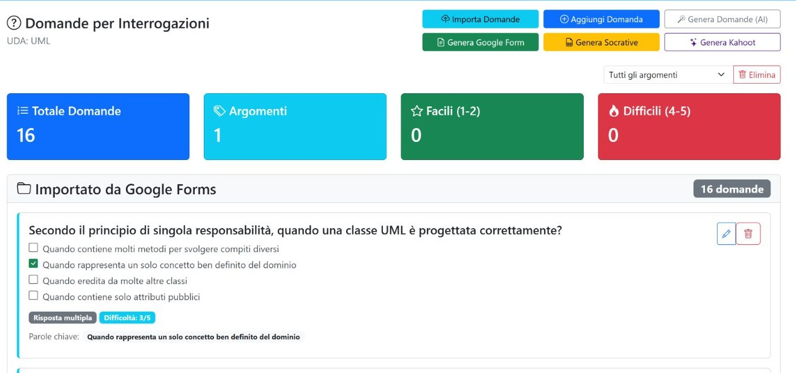

Capitolo 04 · banca delle domande
Consultare e preparare le domande
La pagina raccoglie le domande dell’UDA e offre strumenti per crearne di nuove, importarle e riutilizzarle nelle prove. Nell’archivio UML osservato erano presenti 16 domande.

Comandi principali
| Controllo | Funzione |
|---|---|
| Aggiungi Domanda | Apre il modulo per inserire i campi della nuova domanda. Salva Domanda aggiunge la voce all’UDA; Annulla chiude il modulo senza inviarlo. |
| Modifica | Apre il modulo della domanda selezionata; il salvataggio aggiorna quella voce. |
| Modifica / Elimina nella scheda | Le azioni della scheda aggiornano o rimuovono la domanda scelta, con conferma per l’eliminazione. |
| Importa domande | Apre un flusso guidato: si sceglie una sorgente o un formato strutturato, si carica e controlla un’anteprima, quindi si conferma l’importazione. |
| Genera Domande (AI) | Apre la generazione assistita di nuove domande; controlla il testo e la risposta proposta prima di salvarle nell’archivio. |
| Genera Google Form | Apre la preparazione di un modulo a partire dalle domande disponibili. |
| Genera Socrative | Apre la preparazione di un quiz Socrative con le domande disponibili. |
| Genera Kahoot | Apre la preparazione di un quiz Kahoot con le domande disponibili. |
| Argomento nel modulo Elimina | Sceglie l’ambito dell’operazione massiva; non filtra le schede mostrate nella pagina. |
| Elimina | Chiede conferma e cancella dall’UDA tutte le domande se è selezionato “Tutti gli argomenti”, oppure quelle del solo argomento scelto. |
Importazione strutturata: sequenza d’uso
- Scegli il formato strutturato disponibile (JSON, CSV o Excel).
- Scarica il relativo modello e prepara le colonne richieste: argomento, tipo, domanda, risposta attesa, parole chiave, difficoltà, tempo, ordine e note.
- Carica il file oppure inserisci il contenuto nel campo previsto; il caricamento da anteprima consente di correggere prima di inviare.
- Usa Mostra anteprima per verificare le voci riconosciute e correggere eventuali errori.
- Conferma l’importazione solo dopo il controllo: è il passaggio che aggiunge le domande all’UDA.
Prima di salvare: controlla che il testo della domanda, la risposta attesa e l’ordine siano corretti. Creazione, importazione, modifica ed eliminazione hanno effetto sull’archivio.